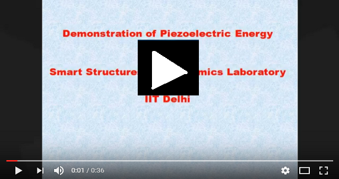
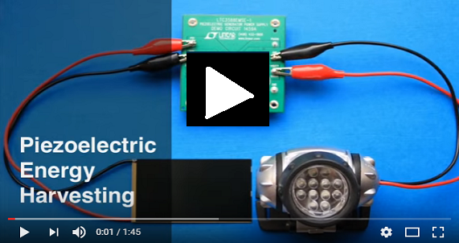
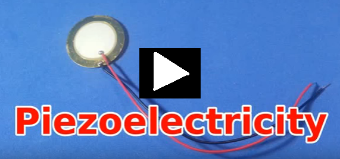
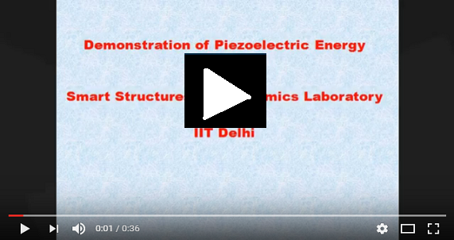
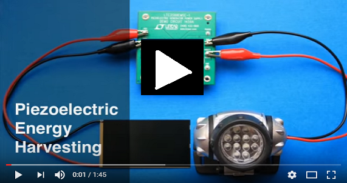

Piezoelectric Generator Harvesting the Heart's Energy
 
Piezoelectric Generation IIT DELHI Piezoelectric Energy Harvesting
RESOURCES FOR USER |
|
See related video |

Piezoelectric Generator Harvesting the Heart's Energy   Piezoelectric Generation IIT DELHI Piezoelectric Energy Harvesting |
|
Click the tags below to begin experimentation:   For more information user may read the Doctoral Thesis of Dr. Naveet Kaur "Integrated Structural Health Monitoring and Energy Harvesting Potential of Adhesively Bonded Thin Piezo Patches Operating in d31 Mode". |